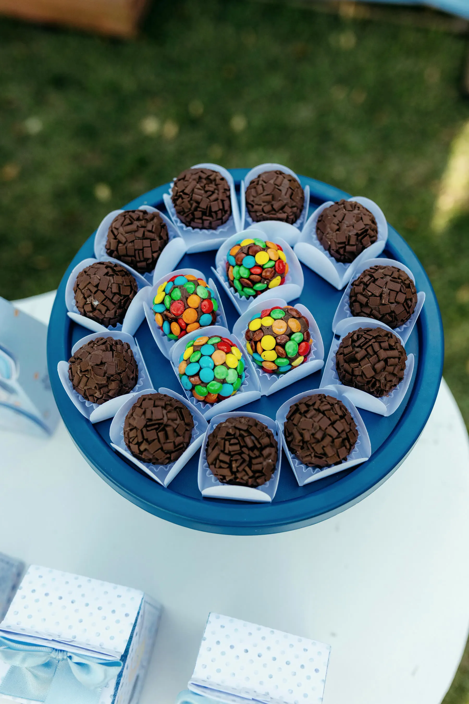
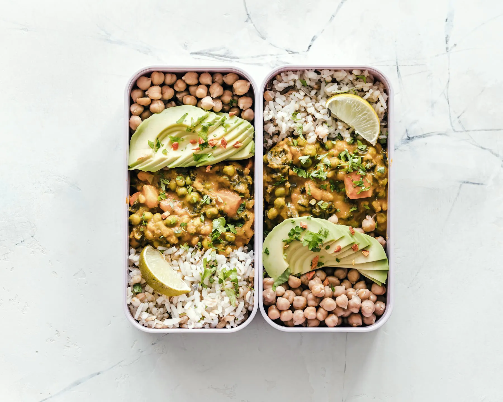
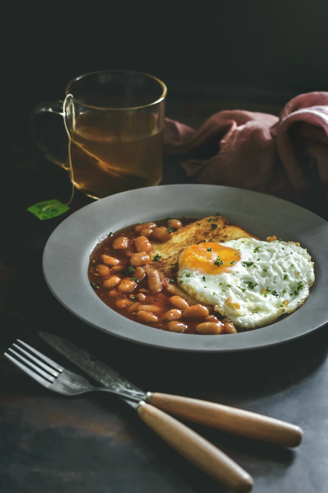
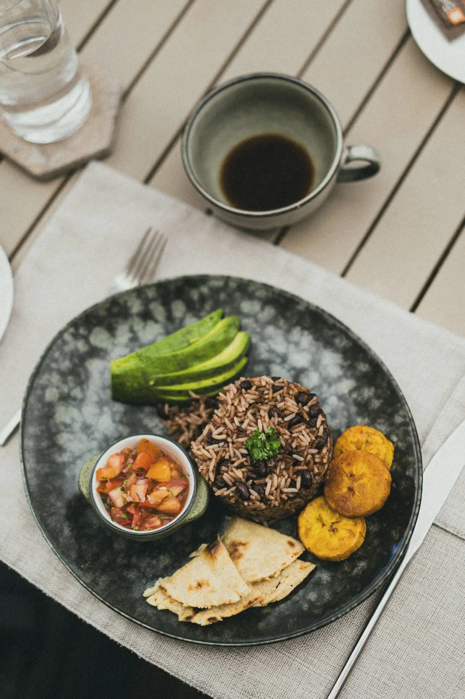

Já tentou várias dietas
E sempre volta ao ponto zero. Aqui o plano nasce da sua rotina, não de uma lista de proibidos.
Oi, eu sou a Marília, mas pode me chamar de Má. Há mais de 14 anos ajudo mulheres a organizar a alimentação de um jeito que cabe na rotina, sem cortar o que gostam.


E sempre volta ao ponto zero. Aqui o plano nasce da sua rotina, não de uma lista de proibidos.
E não consegue seguir plano impossível. Horários, marmita e compras organizados com você.
Nada de terrorismo alimentar. Comida de verdade, do jeito que você gosta.
No próprio corpo, com alguém do seu lado em cada semana do processo.
No método Você Mais Magra, o plano é ajustado toda semana pelo WhatsApp, conforme a sua rotina muda. A vida real entra no plano.
Um café da manhã que fica pronto em cinco minutos e segura até o almoço.

Uma base que se repete e muda de cara, sem passar o domingo na cozinha.
Lista pensada para o seu cardápio. Sem produto caro de dieta.
Do jeito que você já cozinha, com horários que funcionam no seu dia.

Um plano B pronto para a noite em que tudo dá errado. E está tudo bem.
O doce do aniversário entra no plano. Sem culpa e sem compensar depois.

Continua sendo de domingo. Na segunda, a gente conversa e ajusta a semana.

“Eu já emagreci 17 quilos e passei pelo efeito sanfona. Em todos esses anos de consultório, vi que não faltava força de vontade. Faltava estratégia.”
Por isso o meu trabalho é ajudar você a encontrar um caminho possível, sem dietas restritivas e sem viver refém da balança.
Marília Souza · nutricionista, foco em emagrecimento feminino
Ninguém vai te entregar um cardápio pronto e sumir.
A gente entende o seu momento e marca o melhor horário.
No consultório, com calma: rotina, horários, exames e o que você gosta de comer.
Individual, com as comidas que você gosta e a rotina organizada.
Pelo WhatsApp, acompanhando de perto quando a rotina muda.
Sim. O método trabalha com ajustes, não com cortes. As comidas de que você gosta entram no plano.
Ele foi pensado justamente para mulheres que já passaram por isso e querem um caminho que se sustente.
Cada corpo tem o seu tempo. Com constância e acompanhamento de perto, o foco é uma mudança que dure, não um milagre.
Os atendimentos são particulares. Você recebe a nota fiscal e pode pedir o reembolso ao seu convênio.
Me chama no WhatsApp. Eu entendo o seu momento e explico como funciona o acompanhamento, sem compromisso.